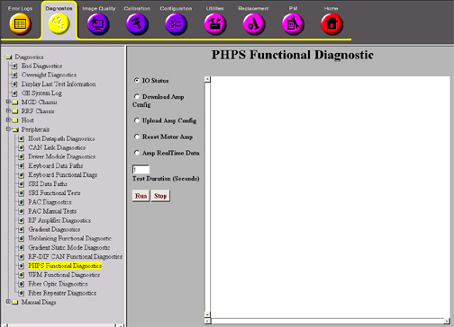

Proprietary to General Electric Company
Direction 5440000, Rev# 5
Signa HDxt Service Methods
Module Version 1.0, Version Date 4/25/07
Proprietary to General Electric Company |
The PHPS status can be checked via the MR Service Diagnostic Tests, and the hardware test points. Both methods are described below.
There are five functional diagnostic tests that can be run, but only two will be discussed, the I/O Status and the Amp Real Time Data. Both tests are selectable from the MR Service Desktop. See Illustration 1.
Illustration 1: PHPS Functional Diagnostics

I/O Status - This diagnostic test will show the status of the Table DC supply, Bore Light, Bore Vent, PAL (Patient Alignment Light), Table motor, and Motor Amplifier. The I/O Status will also provide the power supply values for the 8 volt supply, 5 volt supply, and the 3.3 volt supply. Note, you must turn on the PAL and Bore Light prior to running any diags, otherwise the status will be shown as disabled.
Amp Real Time Data – This utility is useful to run while the table is moving to determine any possible failures. This test will provide the temperature, Actual motor current, commanded motor current, actual motor velocity and commanded motor velocity.
The Table Power Supply provides the DC power to the Dock motor servo amplifier and control board, and the Magnet Room Power Supply provides the Switched DC power to the PAL and Bore Light, and DC power to the SRI and PAC. (See table 1 below)
The PHPS has multiple test points for testing the functional voltages. See Table 1 for the voltage level and spec limits.
Table 1: Voltage Test Points
| Test Point | Voltage Specification Level +/- 5% | Power Supply Source |
| Table Volts / Table com | + 42 Volts DC | Table PS |
| Control Bd +8v / +8V com | + 8 Volts DC | Table PS |
| Bore +12V / Bore Com | Switched + 12 Volts DC | Magnet PS |
| PAL +15V / PAL Com | Switched + 15 Volts DC | Magnet PS |
| SRI +24V / SRI Com | + 24 Volts DC | Magnet PS |
| SRI +12V / SRI Com | + 12 Volts DC | Magnet PS |
| SRI +8V / SRI Com | + 8 Volts DC | Magnet PS |
| PAC -8V / PAC Com | - 8 Volts DC | Magnet PS |
| PAC +10V / PAC Com | + 10 Volts DC | Magnet PS |
| PAC +15V / PAC Com | + 15 Volts DC | Magnet PS |
| PAC -15V / PAC Com | - 15 Volts DC | Magnet PS |
The Magnet Power Supply provides the power for the following functions:
Switched DC power to the PAL.
Switched DC power to the Bore Light.
DC power to the SRI.
DC power to the PAC and Fiber Optic Repeater.
The Table Power Supply provides the power for the following functions:
DC power to the Dock motor servo amplifier
Control board power. The Control Board’s 8 Volts is used to generate the 5 v and 3.3 v for other devices on the control board.
Illustration 2: PHPS Equipment Room Side

Illustration 3: PHPS Magnet Room Side

Table 2: Connectors
| Designator | PHPS Label | Description | Connector Type | Signal Type |
| J5, J6 | TS1 | Bore Vent Fan Output | Terminal | 120 VAC |
| J11 | Long Drive | Long Motor Output | 9 pin Sub-D Female | See detailed pin-out Table 3 |
| J14 | SRI | SRI Power | 37 pin Sub-D Female | See detailed pin-out Table 4 |
| J15 | Bore Light | Bore Light Outputs | 25 pin Sub-D Female | See detailed pin-out Table 5 |
| J20 | PAL | PAL Outputs | 37 pin Sub-D Female | See detailed pin-out Table 6 |
| J32 | System Control | Control Signals | 25 pin Sub-D Male | See detailed pin-out Table 7 |
| J35 | Repeater Power | Fiber Optic Repeater | 15 pin Sub-D Female | See detailed pin-out Table 8 |
| J47 | Dock | Dock Power | 25 pin Sub-D Female | See detailed pin-out Table 9 |
| J89 | PAC | PAC Output | 15 pin Sub-D Female | See detailed pin-out Table 10 |
| J153 | Can Out | Can Output | 9 pin Sub-D Female | See detailed pin-out Table 11 |
| J154 | Can In | Can Input | 9 pin Sub-D Male | See detailed pin-out Table 11 |
| Motor 1 | ||||
| Motor 2 |
Table 3: J11 Long Motor Output Pin Signals
| J11 Pin # | Signal Name | Description / Type |
| 1-4 | Motor 1 | Analog (PWM) |
| 6-9 | Motor 2 | Analog (PWM) |
| 5 | Ground | Chassis Ground |
Table 4: J14 SRI Power Pin Signals
| J14 Pin # | Signal Name | Description/Type |
| 3 | Motor command | Analog ramp (+/-10V) |
| 22 | Motor command return | Analog Gnd |
| 5 | Output enable-P | RS-422 |
| 24 | Output enable-N | RS-422 |
| 7,8,26,27 | +24V | Power for Enclosure switch panel via SRI |
| 9,10,28,29 | 24v return | Power supply Return |
| 11,12,30,31 | +12V | Power for Enclosure display via SRI |
| 15,34 | +8V | DC power for SRI |
| 13,14,32,33 | +12V, 8V return | Power supply return |
| 1 | Em-stop | Thru connect to J32-11 |
| 20 | Lvle return | Thru connect to J32-24 |
| 2,4,6,16 - 19,21,23,25,35 - 37 | No Connection |
Table 5: J15 Bore Light Output Pin Signals
| J15 PIN # | Signal Name | Description / Type |
| 1,3,5,7,9,14,16,18,20,22 | +12V | DC power |
| 2,4,6,8,10,15,17,19,21,23 | 12 V return | Power supply return |
| 11-14, 25 | No connecti |
Table 6: J20 PAL Output Pin Signals
| J20 PIN # | Signal Name | Description / Type |
| 10 - 18 & 29 - 37 | +15V | DC power |
| 1- 9 & 20 - 28 | +15V Return | Power supply Return |
| 19 | No connection |
Table 7: J32 Control Pin Signals
| J32 Pin # | Signal Name | Description / Type |
| 8 | Align light-N | Control RS 422 |
| 21 | Align light-P | Control RS 422 |
| 9 | Bore vent-N | Control RS 422 |
| 22 | Bore vent-P | Control RS 422 |
| 10 | Bore light-N | Control RS 422 |
| 23 | Bore light-P | Control RS 422 |
| 11 | Em stop | Thru connect to SRI J14-1 |
| 24 | Lvle rtn | Thru connect to SRI J14-20 |
| 1 - 7, 12 - 20 & 25 | No connection |
Table 8: J35 Fiber Optic Repeater Pin Signals
| J35 Pin # | Signal Name | Description / Type |
| 12,13,14 | +10V | Fiber Optics Repeater power |
| 6,7,8,15 | 10V return | Fiber Optic Repeater Power Return |
| 1 - 4, 9 - 11, 5 | No connection |
Table 9: J47 Dock Power Pin Signals
| J47 PIN # | Signal Name | Description / Type |
| 11 - 13, 23 - 25 | 42V | Dock DC Power |
| 1 - 3, 14 - 16 | Aux-return | Power supply Return |
| 7 | 42 V remote sense + | Remote sense at load |
| 20 | 42V remote sense - | Remote sense at load |
| 4 - 6, 8 - 10, 17 - 19, 21, 22 | No connection |
Table 10: J89 PAC Power Pin Signals
| J89 PIN # | Signal Name | Description / Type |
| 1, 2 | +15V | PAC power |
| 9, 10 | -15V | PAC power |
| 3, 11 | +/-15V Return | PAC return |
| 12, 13, 14 | +10V | PAC power |
| 4, 5 | -8V | PAC power |
| 6, 7, 8, 15 | +10, -8V Return | PAC return |
Table 11: J153, J154 CAN Out/In Pin Signals
| J153, J154 Pin # | Signal Name | Description / Type |
| 2 | CAN_Low | CAN Low Differential Signal |
| 3 | Gnd_Iso | Isolated CAN Ground |
| 6 | Gnd_Iso | Isolated CAN Ground |
| 7 | CAN_High | CAN High Differential Signal |
| 9 | +24_Iso | Isolated CAN Power (+24V) |
| 1, 4, 5, 8 | Not used |